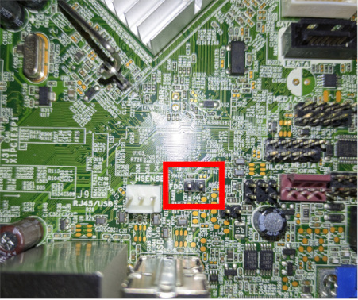
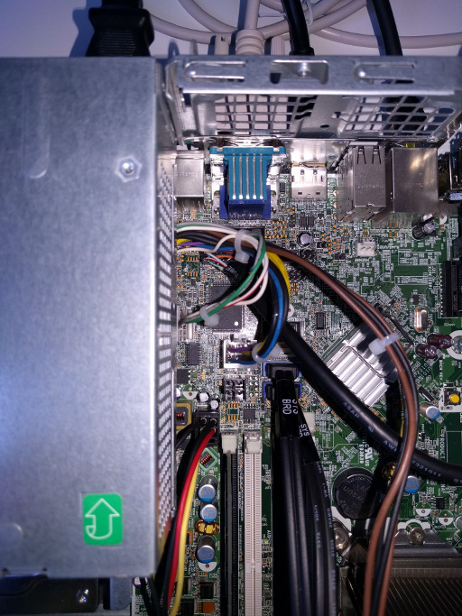
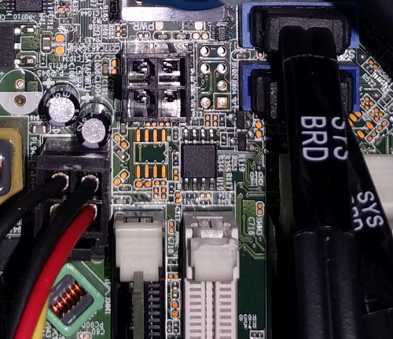

HP Compaq 8200 Elite SFF
This page describes how to run coreboot on the Compaq 8200 Elite SFF desktop from HP.
TODO
The following things are still missing from this coreboot port:
Extended HWM reporting
Advanced LED control
Advanced power configuration in S3
Flashing coreboot
Type |
Value |
|---|---|
Socketed flash |
no |
Model |
MX25L6406E/MX25L6408E |
Size |
8 MiB |
In circuit flashing |
yes |
Package |
SOIC-8 |
Write protection |
bios region |
Dual BIOS feature |
No |
Internal flashing |
yes |
Flash layout
The original layout of the flash should look like this:
00000000:00000fff fd
00510000:007fffff bios
00003000:0050ffff me
00001000:00002fff gbe
Internal programming
The SPI flash can be accessed using flashrom.
$ flashrom -p internal -c MX25L6406E/MX25L6408E -w coreboot.rom
After shorting the FDO jumper you gain access to the full flash, but you still cannot write in the bios region due to SPI protected ranges.
Position of FDO jumper close to the IO and second fan connector

To write to the bios region you can use an IFD Hack originally developed for MacBooks, but with modified values described in this guide. You should read both guides before attempting the procedure.
Since you can still write in the flash descriptor, you can shrink the ME and then move the bios region into where the ME originally was. coreboot does not by default restrict writing to any part of the flash, so you will first flash a small coreboot build and after it boots, flash the full one.
The temporary flash layout with the neutered ME firmware should look like this:
00000000:00000fff fd
00023000:001fffff bios
00003000:00022fff me
00001000:00002fff gbe
00200000:007fffff pd
It is very important to use these exact numbers or you will need to fix it using external flashing, but you should already be familiar with the risks if you got this far.
The temporary ROM chip size to set in menuconfig is 2 MB but the default CBFS size is too large for that, you can use up to about 0x1D0000.
When building both the temporary and the permanent installation, don’t forget to also add the gigabit ethernet configuration when adding the flash descriptor and ME firmware.
You can pad the ROM to the required 8MB with zeros using:
$ dd if=/dev/zero of=6M.bin bs=1024 count=6144
$ cat coreboot.rom 6M.bin > coreboot8.rom
If you want to continue using the neutered ME firmware use this flash layout for stage 2:
00000000:00000fff fd
00023000:007fffff bios
00003000:00022fff me
00001000:00002fff gbe
If you want to use the original ME firmware use the original flash layout.
More about flashing internally and getting the flash layout here.
External programming
External programming with an SPI adapter and flashrom does work, but it powers the whole southbridge complex. You need to supply enough current through the programming adapter.
If you want to use a SOIC pomona test clip, you have to cut the 2nd DRAM DIMM holder, as otherwise there’s not enough space near the flash.
Position of SOIC-8 flash IC near 2nd DIMM holder

Closeup view of SOIC-8 flash IC

Technology
Northbridge |
|
Southbridge |
bd82x6x |
CPU |
model_206ax |
SuperIO |
|
EC |
|
Coprocessor |
Intel ME |